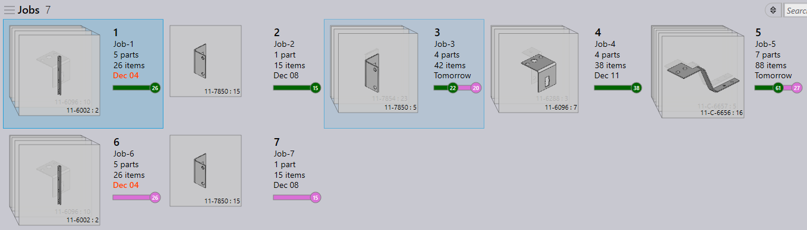

Pull Workflow (or pull scheduling) is useful for users who need a highly autonomous planning and nesting system. When enabled, Praxis plans the nesting on-demand.
In the Pull workflow the Praxis Monitor watches over the machine output folders for NC reports. And if the NC count falls below the cut-off set via Nests per station, the monitor plans fresh nests. The nested outputs and NC are saved to the machine output locations:
Removing the nested layout outputs from the machine output location updates the queue size and triggers auto-planning when queue size goes below the cut-off. Check the Mark the task completed… option to move all job parts on the removed layout to the completed state and reflect it in the Job progress.

Praxis uses a pre-filter heuristic to feed a smaller set of parts to the nesting engine. First, it sorts the available parts by Feasibility, Priority, Due-date and the Job number. And then they are run through the rectangular nest. A couple of lot sizes are selected and thus queued for nesting. This pre-filter heuristics makes sure that:
The image below displays the sheets nested in Pull Workflow.